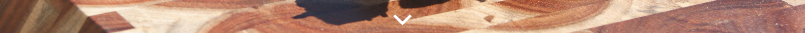

Rotorua Night Market
5pm to 9pm

Beef
New Zealand sourced prime beef marinated in exotic herbs and spices. Including: Lemongrass, Kaffir lime leaves, Turmeric, fresh Ginger and Garlic.
Lamb
Juicy morsels of grass fed lamb leg rubbed with New Zealand Garlic and Toasted Sesame oil.
Pork
Chinese-style sticky marinated pork skewers with real honey, grilled to perfection.
Chicken
Izakaya pub inspired premium chicken thigh fillet skewer. Seasoned with Soy Sauce, Hickory Smoke and special Japanese Lager.